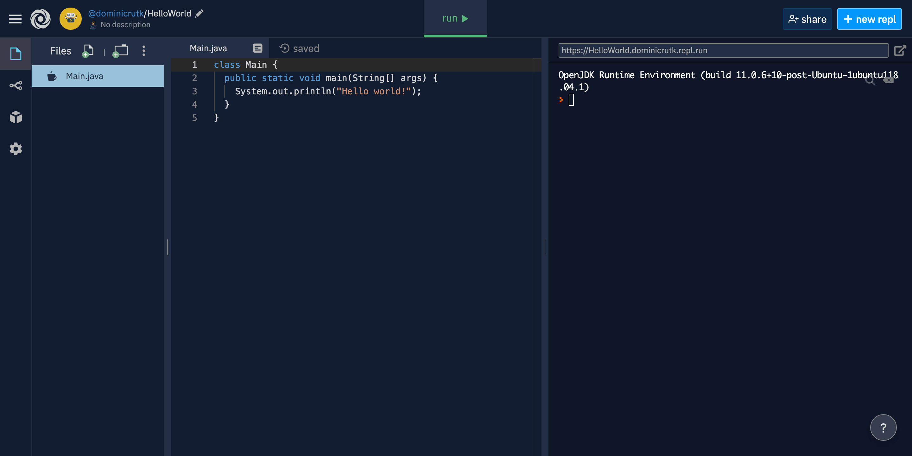

FRC 167 Documentation
Hi there! My name is Dominic, and I'm the primary author of this book. I've been on FRC Team 167 since 2018, and I'll graduate from the team in 2021. On the team, my main role has been software lead, but I've also expanded into business roles.
With each graduating class, it seems like our team loses lots of collective wisdom. Since I am graduating soon, I want to stop that from happening. In addition, certain subteams on our team regularly have trouble teaching new team members what they do. In particular, the programming subteam struggles to teach new members how to code when lots of people come in with absolutely zero experience. This causes many new members to quit the team because they struggle to find a role for themselves.
To solve these issues, I've created this book. It is an ever-expanding record of how different parts of our team operate and what people on each part need to know to succeed. The goal is to teach new members how to be useful on the team and to prevent knowledge from being lost when old members graduate.
Since this book is intended for internal use by team 167 first and foremost, there might be some sections that do not apply to other teams. However, the vast majority of the book's content should be perfectly applicable to most FRC teams. So, if you'd like to use this book as a teaching resource, feel free.
Whenever possible, chapters in this book are self-contained. For instance, the Java Basics chapter doesn't rely on knowledge from any other chapters. In fact, it could be used by someone learning Java outside of an FRC context because it contains very few references to FRC. However, a few chapters rely heavily on others. For example, knowledge of Java and the FRC control system is necessary for understanding the chapter on FRC Programming. When it is the case that one chapter relies on another, it will be announced in the overview of the reliant chapter.
To wrap up the introduction, feel free to use this book however you see fit, but remember that it is primarily for use by team 167, and that may guide its content. Nevertheless, if you'd like to contribute to the book, it is open-source. Check out the section on contributing for more information.
Java Basics
This chapter will introduce the fundamentals of the Java programming language. For many of you, this will be your first time coding, so the chapter is designed for someone with absolutely no prior experience. However, if you have experience in another language—or even if you have Java experience but need a refresher—these lessons will still be helpful to you too.
The concepts introduced in these lessons will cover roughly the same content as the AP Computer Science A curriculum. If you have yet to take that class, these tutorials will prepare you well. If you are currently enrolled, you will find that these tutorials complement your coursework nicely. If you have already taken the class and remember most of it, then you probably don't need these tutorials, but it wouldn't hurt to scan them and see if there are any unfamiliar concepts.
The first couple of lessons in this chapter will cover some general programming concepts, what makes Java different than other programming languages, and how to set up your computer to begin writing code. After those, the remaining lessons will follow a simple pattern of one lesson followed by one programming exercise. This way, after learning new concepts, you can practice them by writing actual code to complete projects.
Although this book is primarily intended for FRC teams, this chapter can be used for learning Java outside of an FRC context. Only a few passing references are made to FRC, and they are unncessary for understanding the content of the chapter.
What is Java?
Before writing any code, it is good to have a general idea of what computer programming is in the first place. This lesson will go over what programming languages do and how they interact with computers. In addition, it will explain what sets Java apart from other languages and why it is useful. Finally, this lesson will discuss how Java is used in the real world and in FRC.
What are Programming Languages?
Even though modern computers may seem to be incredibly powerful and intelligent machines, they are really quite stupid. Computers take instructions from a computer program and interpret them literally. To illustrate this, think about the following sentence:
I saw a person on a hill with a telescope.
What does this sentence mean? Assuming you have a working knowledge of the English language, the sentence probably makes sense to you. However, different people may come to different conclusions about its meaning because it is totally ambiguous. A few possible meanings of the sentence include:
- I saw the person. The person was on the hill. I was using a telescope.
- I saw the person. I was on the hill. I was using a telescope.
- I saw the person. The person was on the hill. The hill had a telescope.
- I saw the person. I was on the hill. The hill had a telescope.
- I saw the person. The person was on the hill. The person was using a telescope.
Indeed, the message conveyed by the sentence depends on the person reading it and the context of the sentence. We take advantage of this when speaking English, but computers don't have such a luxury: they cannot use context when interpreting programs, so programs must be unambiguous. Computers have to interpret programs exactly the same way every single time. One could only imagine the consequences if the computers controlling air traffic or nuclear weapons behaved unpredictably due to differences in context.
The result of this is that computer programs are very specific sets of instructions. Computers interpret programs literally so that they execute precisely the same way every single time. The part of the computer responsible for interpreting and executing computer programs is known as the central processing unit (CPU).
A CPU takes takes computer programs in the form of machine code and sends electrical signals to execute the programs. Machine code is written in binary (0s and 1s), so it is totally incomprehensible to humans. As a result, we have developed what are known as higher-level programming languages. The higher-level a programming language is, the easier it is for humans to read and write.
Systems programming languages like C and C++ tend to be the lowest-level languages that humans work with frequently. They are readable by humans, but they are still fairly complicated. They tend to be used in situations where performance (execution speed) is important such graphic-intensive games or database software.
Above low-level languages like C and C++ are high-level languages like Java, Python, and Ruby. These languages are easier to read and write than low-level languages, but they are normally slower. In addition, they give the programmer far less direct control over the computer. There are some things that you simply cannot do in a high-level language like Java that you can in C++.
Why use Java?
If C and C++ are readable by humans and faster than Java, why would anyone use Java? There are a couple of reasons why people frequently use high-level languages like Java. Firstly, as mentioned already, even though humans can read and write C and C++, it is easier to read and write Java since Java is higher-level. Besides this, in many cases, the difference in speed between C or C++ and Java is unimportant. The final reason that Java is so popular is its philosophy of "write once, run anywhere".
To understand this principle, you first must understand how programs written in low-level languages are executed. To run a C program, one must compile it. A compiler translates code in a language like C to machine code that the CPU can execute directly.
Now, think about all the different computers you have. If you have a laptop and a smartphone, they almost certainly have different CPUs inside. Your laptop almost certainly has a CPU made by Intel or AMD, and your phone probably has a CPU made by Apple, Qualcomm, or Samsung. Although it may seem like it, none of these CPUs functions in exactly the same way. Different CPUs have different types of machine code because they have different sets of instructions they can execute. Desktop/laptop CPUs normally have large instruction sets (x86) to maximize performance while mobile CPUs often have small instruction sets (ARM) to improve battery life.
Since different CPUs have different types of machine code, a program compiled from C on one computer might not run correctly on another computer (if it runs at all). Even though the C code is the same, the compiled machine code is different. This means that a program compiled from C cannot easily be shared with other people; their computers might not execute it the same way.
The Java philosophy of "write once, run anywhere" means that after writing and compiling Java code, the same compiled program can run on any computer. The way Java does this is with an intermediate language called Java bytecode. When you compile a Java program, it gets translated into Java bytecode—not machine code. Then, the Java bytecode can be distributed to any computer with a Java Virtual Machine (JVM) installed. The JVM executes Java bytecode by converting it into machine code for the specific CPU. This means that the only people who have to worry about the differences between different CPUs are the people who create the JVM.
One limitation you might think of to this process is that to run a Java bytecode program, a computer must have a JVM installed. However, Java is so ubiquitous that most computers have it. Indeed, lots of computers come with it preinstalled.
There are two main software packages that contain a JVM. The Java Runtime Environment (JRE) is intended for consumers. It contains a JVM and several other libraries required to run Java bytecode. The other package is the Java Development Kit (JDK), which is intended for programmers. The JDK includes the JRE and a compiler to translate Java into Java bytecode.
Java Today
Java is not the only language to abide by the "write once, run anywhere" principle. There are other programming languages that are compiled into Java bytecode and executed on the JVM. This includes languages like Scala, Kotlin, and Clojure. Each of these languages is newer than Java and improves on some of its flaws.
Despite the existence of these newer languages, Java still haas a large presence in technology throughout the world. In fact, according to the TIOBE index (a measure of programming language popularity), Java is the second most-used programming language in the world (as of May 2020). The only language more popular is C. Lots of older code is written in Java and needs to be maintained; it would be too expensive to completely rewrite it in another language. In addition, new applications are written in Java all the time. Fields in which Java is common include web development, Android apps, and business applications.
For the FIRST Robotics Competition, teams can use Java, C++, or LabVIEW. Our team uses Java for a plethora of reasons. LabVIEW is a graphical programming language developed by National Instruments (the company that makes the roboRIO), and it is meant to be easy for rookie teams to use, but its graphical syntax makes it cumbersome for experienced teams like us. C++ is a very powerful and popular language, but it is needlessly complicated for our team. In addition, its extra speed compared to Java is unnecessary for FRC. Most importantly, the AP Computer Science classes in our school district teach Java, so we have far more people with experience in it than in C++.
Hello World
In this lesson, we will go over how to set up Repl.it and use it to write and execute Java programs.
Why use Repl.it?
Repl.it is an online Java editor (it works with other programming languages too, but we're just using it for Java). As such, it lets you write and run Java programs from any computer. Think of it as Google Docs but for programming in Java. If you read What is Java? (which you should have), then you know that to write and run Java code, you need a JDK installed. Repl.it comes with a JDK built-in, so compiling and executing a Java program is as simple as clicking a button. These features are great for learning because they make getting started incredibly simple. This is why we will use Repl.it in these lessons.
However, rarely do professionals use Repl.it for writing their code. There are a few reasons for this. The first is that Repl.it is slow. When learning, it doesn't feel overly slow, but when writing large applications with lots of files, it slows down, and the small delays add up. Another reason that few professionals use Repl.it is it stores your code on the cloud. This poses a potential security issue for people working on private software or dealing with classified information. The final (and most significant) reason that Repl.it doesn't work for professionals is that it doesn't offer enough flexibility. Professionals need to be able to have complete control over the computers they write their code on. Without going into too much detail, certain types of programming are difficult or impossible using Repl.it. For instance, developing robot code for FRC is not really possible using Repl.it (the chapter on FRC programming explains how to set up another editor).
A Tour of Repl.it
To get started, go to repl.it on your computer and click the button in the top right corner to create an account. You can sign in with Google or use your email address.
Each project on Repl.it is called a repl. You will create a new repl for each of the projects in this chapter. Once your account is created, click the button that says "+ new repl" in the top right corner. You should see a few options for your repl. For the language, pick "Java". Be careful as there are several other options with Java in the name including "JavaScript", "Java Swing", and "Java Processing using Processing.js". These options are all incorrect. For the project name, pick whatever makes sense to you. It is important to give your projects meaningful names to keep your code organized in case you need to look back at it. I suggest you name this project "HelloWorld". Assuming you are on the free plan for Repl.it, you must leave your repl accessible to the public, but that won't be a problem.
 A new Java repl called HelloWorld
Once your repl is created, you should see a screen something like this. There are a few important parts of this interface that you should know about.
At the top is the menu bar. The left of the menu bar lets you navigate back to your profile so you can see all your other repls. The large button in the center labeled "run" compiles and executes your code. Finally, the buttons on the right side of the menu bar let you share your repl with other people or create a new repl.
Looking to the left side of the screen, there is a thin, vertical strip with four icons. The topmost icon shows/hides the files in your repl. The only file that should exist if you just created the repl is Main.java. The next two icons are unimportant for this chapter. The last icon contains project settings. You should probably leave them alone except for light/dark mode and font size depending on your personal preferences.
On the left side of the screen after the list of files (which may be hidden), there is a large pane called the editor. This is where you write your code. A new Java repl should start with a little bit of code in Main.java. It should look something like this:
class Main {
public static void main(String[] args) {
System.out.println("Hello world!");
}
}
On the right side of the screen is a large pane called the console. This is where the results of your program will appear. It is also where you can input data to your program if necessary (e.g. if your program asks for your username, you can type it in the console). If you haven't run a program yet, the console should begin with something like OpenJDK Runtime Environment (build 11.0.6+10-post-Ubuntu-1ubuntu118.04.1). If you have run a program, you can refresh the page, and the console should reset to that text. Taking a look at the text, OpenJDK is the type of JDK that is compiling and running your code. The version of Java is 11.0.6 (it might be a higher version for you). As of June 2020, FRC uses Java 11, so everything you learn using Repl.it should be valid FRC code.
When you are ready, you can run the program by clicking the "run" button on the menu bar. After a few seconds, you should see the text Hello world! appear in the console (note that there might be a few lines of gibberish before it). Congratulations on running your first bit of Java code! At this point, you can confirm Repl.it is working properly. As a general rule, problems caused by Repl.it can be fixed by refreshing the page.
Take a few minutes to explore the Repl.it interface. Make sure you're comfortable with creating projects, locating existing projects, and running your code. Once you feel ready, you can move on to the next lesson. There, you'll start learning to actually write code!
Printing and Commenting
To begin, this lesson will take a look at the Hello world! program you created in the previous lesson. We will cover important points about the structure of that program. Then, we will discuss how you can print whatever text you want to the console. Finally, we will talk about commenting your code.
Hello World!
Go ahead and create a new Java Repl. I suggest you call it PrintingAndComemnting. Just like in the last lesson, there should be a little bit of autogenerated code:
class Main {
public static void main(String[] args) {
System.out.println("Hello world!");
}
}
To a beginner, this program looks very intimidating. Don't worry though—you don't have to understand any of it yet. We won't even cover what some parts of it do until several lessons later. With that in mind, there are a few things that are important for you to take note of. One important idea is syntax highlighting. Practically all editors, including Repl, make different parts of your code appear in different colors. This is to help you identify sections of code and easily diagnose errors.
Another important thing to notice is the indentation. Inside each set of curly braces ({ and }), the level of indentation increases by one unit. In this case, one unit is equal to two spaces since that is the default setting for Repl.it. The specific amount of indentation is unimportant (programmers often disagree about one tab, two spaces, three spaces, four spaces, or eight spaces), but it is critical that within a program, you are consistent. Properly indenting your code makes it much easier to read.
All Java programs begin with a main method. The main method starts on the second line where it says public static void main(String[] args) {. Everything after the { but before the } is inside the main method. This means that the only thing currently inside the main method is the third line which reads System.out.println("Hello world!");.
The third line is an example of a statement. Statements in Java are specific instructions. You can think of them as commands to the computer. For instance, the statement on the third line tells Java to put the text from inside the quotes in the console. In this case, the text is Hello world!, so Hello world! gets printed in the console.
All statements inside the main method are executed in order. Currently, there is only one statement inside the main method, so it gets executed first, but if there were another statement before it, then that would be executed first.
Statements always end in a semicolon (;). If you try removing the semicolon at the end of the third line and running the program, it will not compile. Repl.it will print an error message in the console instead:
Main.java:3: error: ';' expected
System.out.println("Hello world!")
^
1 error
compiler exit status 1
This error is fairly simple, but reading error messages is an important skill. The first line of the error message is the most important. It says that there is an error in the file Main.java on line 3. The compiler expects a semicolon there, but there isn't one. Then, the error message points to where a semicolon should be at the end of the line. Next, the compiler says there was 1 error in total. If we had multiple errors in our code, that number would be higher. Finally, it says the compiler exited with status code 1. Status codes indicate whether or not the program finished running. If a program exits with status code 0, that means it finished as expected. If a program exits with any nonzero status code, there was an error somewhere that prevented it from finishing properly. Because we are missing a semicolon at the end of line 3, the compiler exited with status code 1.
If you put the semicolon back where the error message tells you, the program will run again, printing Hello world! to the console.
Basic Printing
Now that you have a general idea about how Java programs execute, you can start printing other text to the console. As discussed in the previous section, statements in the main method are executed sequentially. If we want to print Hello world! to the console twice, we just need to duplicate the statement that prints it, and the two statements will be executed one after another. The following program prints Hello world! to the console twice:
class Main {
public static void main(String[] args) {
System.out.println("Hello world!");
System.out.println("Hello world!");
}
}
The statement System.out.println("Hello world!"); prints whatever is inside the quotation marks to the console. Then, it jumps to the next line. This is why the output of the program looks like this:
Hello world!
Hello world!
A statement similar to println exists which prints the text inside the quotation marks but does not jump to the next line after that. To print just the text inside the quotes, you can write System.out.print("Hello world!");. If we modify our program from above, changing println to print, we get the following output:
Hello world!Hello world!
This output makes sense because there are no newlines involved in the print statement.
As you have probably figured out by now, we can print other text to the console by simply changing what is inside the quotes. Try to figure out what the following program would print to the console (make sure to take whitespace and newlines into account):
class Main {
public static void main(String[] args) {
System.out.println("FRC Team 167 is the oldest robotics team in Iowa.");
System.out.print("It was founded in 1998. ");
System.out.println("In 2020, the team won the Lake Superior Regional.");
}
}
Click to reveal the answer
FRC Team 167 is the oldest robotics team in Iowa.
It was founded in 1998. In 2020, the team won the Lake Superior Regional.
The first statement prints the text FRC Team 167 is the oldest robotics team in Iowa. followed by a newline since it is a println statement (println stands for "print line"). The second statement prints It was founded in 1998. . Notice there is a space at the end because there is a space before the closing quotation mark in the statement. Additionally, notice that there is not a newline character at the end because we used print instead of println. As such, the last statement starts printing on the same line the second statement left off on. It prints the text In 2020, the team won the Lake Superior Regional. followed by a newline.
Escape Sequences
Take a look at the following program. Can you guess what it prints to the console?
class Main {
public static void main(String[] args) {
System.out.println("MLK said, "The time is always right to do what is right."");
}
}
The syntax highlighting shows us that something is wrong. We can confirm this by trying to compile the program. The compiler complains about several errors (if you try compiling it yourself, notice that the compiler incorrectly identifies what the error is, so you need to identify and fix it yourself). In this case, the error is that we used a " in the text we were trying to print. The compiler thought that the " at the beginning of MLK's quote signified the end of the text we wanted to print. Then, it encountered a bunch of unknown words outside of quotations marks. It didn't know what to do, so it said there were several errors.
We can get around this error by using escape sequences. These allow us to use special characters in text. The backslash character (\) indicates that we want to start an escape sequence. For instance, we can use \" in our text to print the " character. This means that the correct program to print MLK's quote looks like this:
class Main {
public static void main(String[] args) {
System.out.println("MLK said, \"The time is always right to do what is right.\"");
}
}
If we want to manually insert a newline in a string of text, we can do so using the \n escape sequence. For instance, consider the following program:
class Main {
public static void main(String[] args) {
System.out.println("This\nis\nsome\ntext.");
}
}
The output of the program looks like this:
This
is
some
text.
Using the \n escape sequence, you can mimic the behavior of the println statement using print. System.out.println("This is some text."); and System.out.print("This is some text.\n"); are equivalent. However, the println statement is preferred because it is more readable.
To print the backslash character itself, you need to escape the backslash with another backslash. This means that to print \, you must use \\ inside your quotes.
There are several other escape sequences in Java. You have learned the most important ones, but if you're curious, you can check out this website to learn the others.
Comments
Comments allow us to write notes to ourselves in our code. We can use them to explain what code does or why we made a particular decision to do something in a certain way. In small programs like those you are writing right now, they often seem pointless, but in large applications, they are super important for figuring out what is going on. If you ever come back to code you wrote six months ago or if you have to use code someone else wrote, comments help you figure out what the code is doing.
There are three types of comments in Java. The first type is a single-line comment. Single-line comments begin with //. After that, you can write anything you want for the rest of the line, and the compiler will ignore it. For instance, the following program contains a comment explaining what the print statement is doing:
class Main {
public static void main(String[] args) {
// This print statement prints newlines using \n
System.out.println("This\nis\nsome\ntext.");
}
}
The second type of comment is a multi-line comment. Multi-line comments are enclosed in /* and */. Anything between will be ignored by the compiler. This program showcases a multi-line comment:
class Main {
public static void main(String[] args) {
/* This is an example of
a comment that spans
multiple lines.
*/
System.out.println("This\nis\nsome\ntext.");
}
}
The final type of comment is a special type of multi-line comment called JavaDoc. We won't discuss this now because it requires learning about objects and methods first.
Variables
This is a test page. This page will explain variables and data types.
Conditionals
This is a test page. This page will explain how to use if statements and switch blocks.
Loops
This is a test page. This page will explain while loops, do while loops, and for loops.
Object-Oriented Basics
This is a test page. This page will explain the basics of object-oriented programming.
Statics and Singletons
This is a test page. This page will explain the static keyword and the singleton design pattern.
Polymorphism
This is a test page. This page will explain what polymorphism is and how to use it including interfaces, inheritance, and abstract classes.
Arrays and Collections
This is a test page. This page will explain arrays and important collections including ArrayLists, Stacks, and Queues.
Miscellaneous
This is a test page. This page will explain relevant topics that don't fit into another page or provide resources for them. Some ideas for topics include variadic arguments, multithreading, generics, lambda functions, and initializer blocks.
Contributing
We welcome any relevant contributions to the book! If you want to contribute, the GitHub repository is available here. The contribution guidelines are available here. This includes an explanation of the project structure and the build process.
Credits
The following people have played a role in the creation of this book:
| Name | Role(s) | FIRST Affiliation(s) | Link(s) |
|---|---|---|---|
| Dominic Rutkowski | Primary Author | FRC 167 | GitHub |